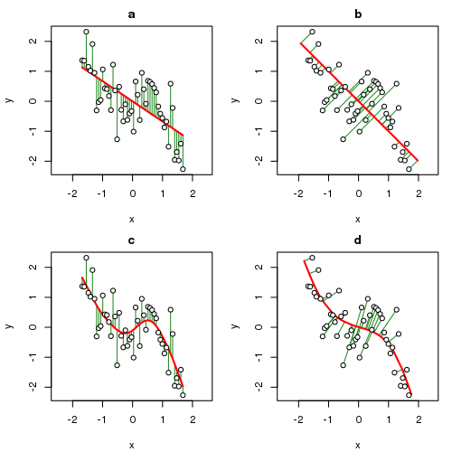
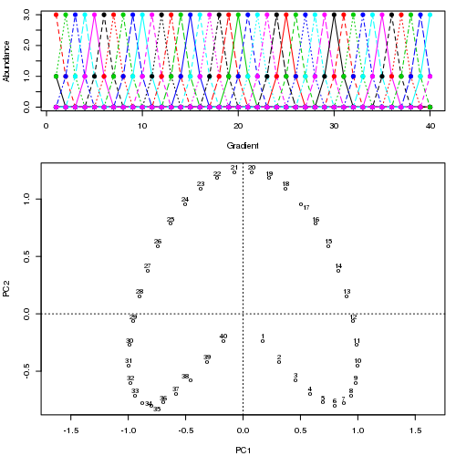
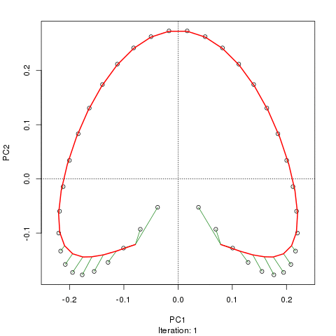
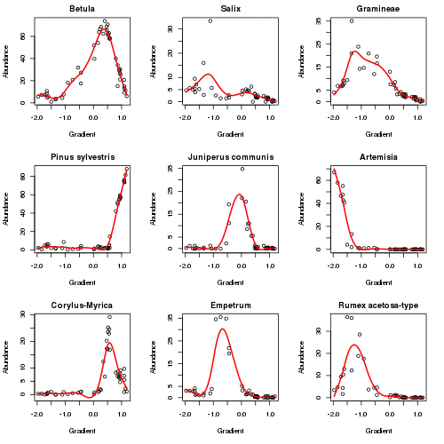
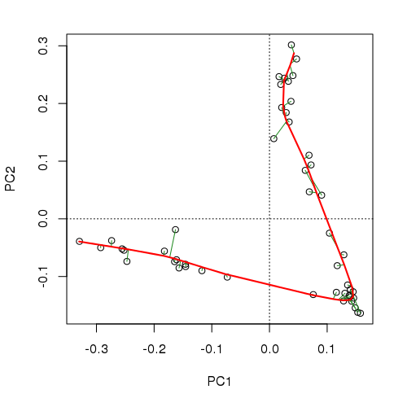

Summarising multivariate palaeoenvironmental data
part 2
Posted in
Tagged
The horseshoe effect is a well known and discussed issue with principal component analysis (PCA) (e.g. Goodall, 1954; Noy-Meir and Austin, 1970; Swan, 1970). Similar geometric artefacts also affect correspondence analysis (CA). In part 1 of this series I looked at the implications of these “artefacts” for the recovery of temporal or single dominant gradients from multivariate palaeoecological data. In part 2, I introduce the topic of principal curves (Hastie and Stuetzle, 1989).
A principal curve (PC) is a smooth, one-dimensional curve fitted through a data set in \( m \) dimensions in such as way that the curve “fits” the data best, for some definition of “best”, which we will take as meaning that the distances between the observations and the curve are minimised in some way. PCs can be thought of as a combination of principal components and splines and as you’ll see in part 3 of this series, this concept is not just superficial. In the figure below, data from the equation
\[ y = -0.9x + 2x^2 + -1.4x^3 + \varepsilon, \quad \varepsilon \sim N(\mu = 0, \sigma = 0.05) \]
are plotted and the fitted relationship between \(x\) and \(y\) is shown as produced by four methods indicated by the red line in each panel. The four methods used were
- Ordinary Least Squares (OLS)
- Principal Components Analysis (PCA)
- Cubic smoothing spline (CSS), and
- Principal Curves (PCs)

For our purposes, think of \(x\) and \(y\) as being two species. In the OLS solution, the sum of squared errors in \(y\) are minimised by the fitted line and hence \(x\) and \(y\) play different asymmetric roles in the model; uncertainty in \(x\) is considered to be zero and all the random variation is in \(y\). Contrast this with the way errors are minimised in PCA; the error is now with respect to both \(x\) and \(y\) and hence the distance from a point to it’s location on the principal component line is orthogonal (or at 90°) to the line. In both cases however, the fitted line, the “model”, is linear, a straight line.
Splines of various sorts have been used to provide non- or semi-parametric fits between \(x\) and \(y\). In panel (c) of the plot above, a cubic smoothing spline is fitted to the sample data. As with OLS, the CSS minimises squared errors in \(y\) only; it is a regression method after-all. The difference is that the fitted model can be a smooth curve rather than a straight line.
Prinicpal curves combine the features of the PCA approach with those of the spline. The corresponding principal curve for the sample data is shown in panel (d) and is a smooth, non-linear fit but this time the fit has minimised the error in \(x\) and \(y\). The errors are orthogonal to the principal curve and join the observation with the point on the curve to which it projects, in other words is closest to. I’ll look at exactly how that is done later in this post.
The algorithm developed by Hastie and Stuetzle (1989) to fit a PC has two essential steps
- a projection step, and
- a local averaging step.
These two steps are iterated to convergence and can be arranged in any order; you can start with either the projection step or the local averaging step.
In the projection step, the sample locations are projected onto the current PC by finding the location along the curve closest to each point. Closest is defined in the same way as for PCA, namely the length of the line orthogonal to the curve that joins the sample point and its projection point on the curve.
For the local averaging step, one end of the curve is chosen arbitrarily and the distance along the curve from this end is determined. These distances are then used as the predictor variable in a smooth regression model to predict the response values of a single species. A model is fitted in turn to each species. This step has the effect of bending the curve towards the data. The type of smoother used for the models is a plugin to the PC algorithm; smoothing splines were initially used, but any smooth regression model could be employed, such as a kernel smoother or regression splines, or a generalized additive model.
Convergence is declared when the fitted curve is sufficiently close to that of the previous iteration, the meaning of sufficiently close being controlled by a threshold parameter that can be varied by the user to allow for more or less strict convergence.
To illustrate the fitting process, I turn to a synthetic data set from Podani and Miklós (2002), one that is similar in spirit to the data I used from Legendre and Legendre (2012, 482) in the earlier post. The data set is somewhat tedious to create hence I have written a couple of functions that can generate data sets from the paper (Podani and Miklós, 2002) that are available on Github. To read this code into R and recreate the data from Figure 1 (Podani and Miklós, 2002) run
## load Podani and Miklos data-set-generating function from github
tmp <- tempfile()
download.file("https://github.com/gavinsimpson/random_code/raw/master/podani.R",
tmp, method = "wget")
source(tmp)
## generate data set 1 of Podani & Miklos
p1 <- podani1()As with the data in the earlier post, when ordinated using PCA a very strong horseshoe is apparent in the solution. Projecting points on to the first PCA axis for example, the true ordering of samples along the gradient is lost at the ends of the axis where the horseshoe bends back on itself.
## ordinate
library("vegan")
pca1 <- rda(p1)
## plot data and PCA
layout(matrix(c(1,2,2), nrow = 3))
matplot(p1, type = "o", pch = 19, ylab = "Abundance", xlab = "Gradient")
ordipointlabel(pca1, display = "sites")
layout(1)
There are several R packages that fit PCs as described above, including princurve, which was converted from the S original implementation of Trevor Hastie, and pcurve, Glenn De’ath’s port of Hastie’s code and given an ecological makeover as described in (De’ath, 1999) and which I now maintain. However, I will use the interface I wrote for the analogue package, which is a wrapper to the principal.curve() function of princurve, designed specifically for working with palaeo data. To fit a PC to the example data, use
## Load analogue
library("analogue")
prc1 <- prcurve(p1, trace = TRUE, plotit = TRUE, thresh = 0.0005, maxit = 50)Because I used trace = TRUE, information on the fitting process is printed to the screen. Note that I increased the maximum number of iterations to 50 (maxit = 50) and reduced the default convergence tolerance (thresh = 0.0005) to give a closer fit and to make a more interesting animation showing how the curve in sequentially updated. The plotit argument will draw a plot of the current iteration’s PC in a PCA of the data. The figure below shows this updating of the curve as an animation

Although I haven’t actually checked, I suspect the reason the fitted curve moves away from the samples at the top of the figure in later iterations is that it is being bent closer to samples in other dimensions than those shown on the PCA. If you were to use the default tolerance, the algorithm converges after five iterations and is much closer to the samples at the top of the figure and has a slightly better fit than the one shown in the figure, however, it is not self-consistent given the tighter tolerance of thresh = 0.0005. A curve is said to be self-consistent if for any point on the curve, the average of the points that project there coincides with the point on the curve. Hastie and Stuetzle (1989) note that they are “unable to prove… that each step guarantees a decrease in the criterion [sum of squared errors]”
, which fits with our observations here. prcurve() spat the following information to the screen during fitting
R> prc1 <- prcurve(p1, trace = TRUE, plotit = TRUE, thresh = 0.0005,
+ maxit = 50)
--------------------------------------------------------------------------------
Initial curve: d.sq: 415.4000
Iteration 1: d.sq: 225.0781
Iteration 2: d.sq: 226.6742
Iteration 3: d.sq: 227.8931
Iteration 4: d.sq: 229.2305
Iteration 5: d.sq: 229.0200
Iteration 6: d.sq: 229.4651
Iteration 7: d.sq: 230.2869
Iteration 8: d.sq: 231.3375
Iteration 9: d.sq: 232.8548
Iteration 10: d.sq: 234.2305
Iteration 11: d.sq: 235.1783
Iteration 12: d.sq: 235.4467
Iteration 13: d.sq: 235.1242
Iteration 14: d.sq: 236.7539
Iteration 15: d.sq: 242.6807
Iteration 16: d.sq: 247.1509
Iteration 17: d.sq: 248.8073
Iteration 18: d.sq: 249.5422
Iteration 19: d.sq: 250.2597
Iteration 20: d.sq: 250.9525
Iteration 21: d.sq: 251.5495
Iteration 22: d.sq: 252.0903
Iteration 23: d.sq: 252.5108
Iteration 24: d.sq: 252.8692
Iteration 25: d.sq: 253.1439
Iteration 26: d.sq: 253.4109
Iteration 27: d.sq: 253.6296
Iteration 28: d.sq: 253.8369
Iteration 29: d.sq: 254.0217
Iteration 30: d.sq: 254.1867
Iteration 31: d.sq: 254.3728
Iteration 32: d.sq: 254.5084
Iteration 33: d.sq: 254.6286
--------------------------------------------------------------------------------
PC Converged in 33 iterations.
--------------------------------------------------------------------------------
33 iterations were required before convergence in this instance. Printing the object returned by prcurve() yields further information on the fitted curve
R> prc1
Principal Curve Fitting
Call: prcurve(X = p1, maxit = 50, trace = TRUE, thresh = 5e-04, plotit
= TRUE)
Algorithm converged after 33 iterations
SumSq Proportion
Total 415 1.00
Explained 161 0.39
Residual 255 0.61
Fitted curve uses 336.433 degrees of freedom.
The curve explains 39% of the variance in the example data set and whilst there is a significant amount of unexplained variance, the PC is a significant improvement over the % fit that the PCA affords these data (the value displayed below is a proportion) although it does use a significantly higher number of degrees of freedom in doing so (~336 compared with 42 for the PCA — the first principal component is a linear combination of 42 species scores.).
R> varExpl(pca1)
PC1
0.05963
There’s not a whole lot more to principal curves, except a bit of fiddling and plenty of details on how those smoothers are fitted. I don’t want this post to turn into an even larger missive than it already is, so I’ll postpone those details to another post. In the meantime, I’ll show a principal curve fitted to the Abernethy Forest data I introduced at the end of the previous post. I’ll quickly run through the code without much explanation as I’ll cover the details in part three of this series.
## Load the Abernethy Forest data
data(abernethy)
## Remove the Depth and Age variables
abernethy2 <- abernethy[, -(37:38)]
## Fit the principal curve varying complexity for each species
aber.pc <- prcurve(abernethy2, trace = TRUE, vary = TRUE, penalty = 1.4)
aber.pc
## Plot
op <- par(mar = c(5,4,2,2) + 0.1)
plot(aber.pc)
par(op)
## 3d plot
plot3d(aber.pc)The plot below (code not shown for this) shows how the responses of the main taxa in the data set vary as the algorithm iterates to convergence in six iterations. The major changes happen in the first 2 iterations.

The fitted PC is shown below

and explains 96% of the variance in the data
R> aber.pc
Principal Curve Fitting
Call: prcurve(X = abernethy2, vary = TRUE, trace = TRUE, penalty = 1.4)
Algorithm converged after 6 iterations
SumSq Proportion
Total 103234 1.00
Explained 98864 0.96
Residual 4370 0.04
Fitted curve uses 218.339 degrees of freedom.and we’d need 4 or 5 PCA axes to do as well as this, and even then we’d be in the unenviable position of having to visualize that 5d space.
R> varExpl(rda(abernethy2), axes = 1:5, cumulative = TRUE)
PC1 PC2 PC3 PC4 PC5
0.4650 0.8022 0.9059 0.9439 0.9703The principal curve, whilst using a larger number of degrees of freedom (~220 vs ~180 for a 5-axis PCA solution), embeds the same amount of information in a single variable, the arc length distance along the principal curve, which may be used as one would a PCA axis score.
By way of some eye candy to close1, the output of plot3d(aber.pc) is an rgl device window which contains a spin-able, zoom-able 3D representation of the data and the fitted curve. The axes of the plot are the first three principal components, the points are where the samples rfom the core are located in this reduced space and the orange line is the fitted principal curve. Rather than show a static image, I used the rgl package to spin the display and wrapped this up in a video, displayed below. The video can be streamed but weighs in at 11Mb (! — I struggled to keep the text legible), just so you know.
References
Footnotes
Well, not that much candy; I’m still getting to grips with rgl and creating videos from individual PNG frames…↩︎